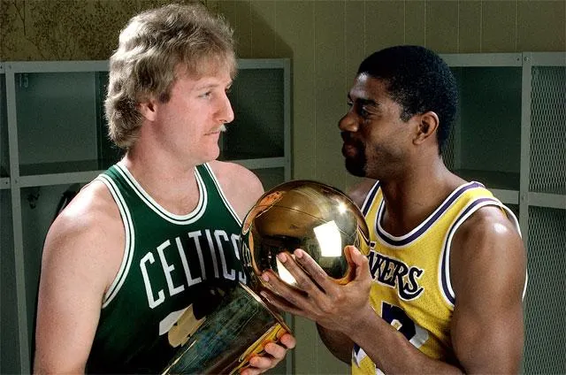
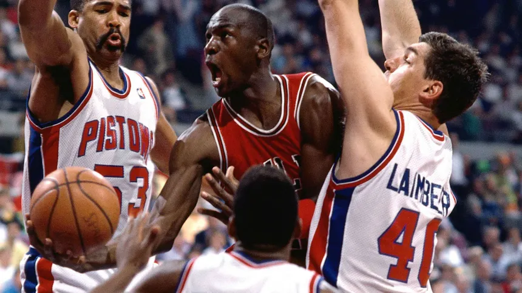
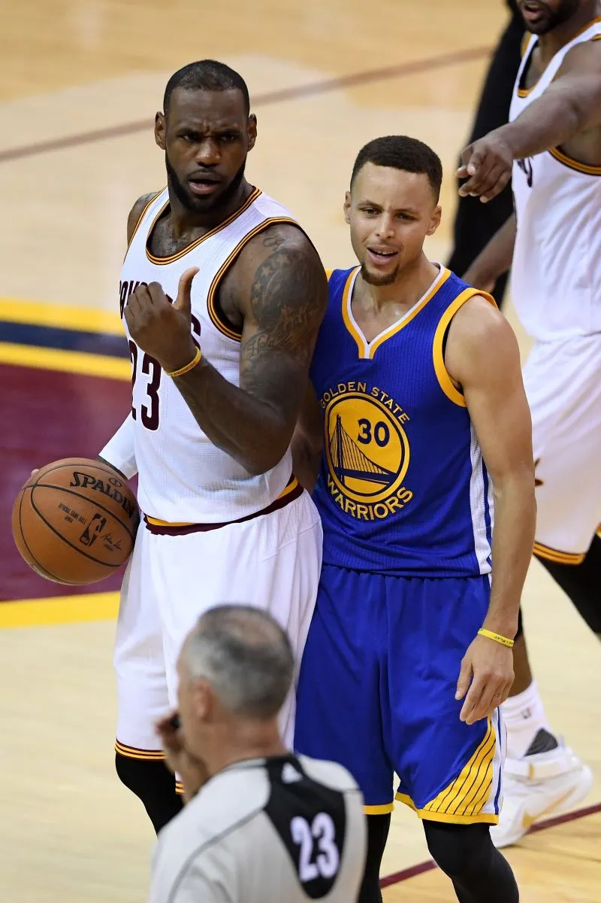

Maiores rivalidades da história da NBA
Na história da NBA (national basketball association), houveram muitas "eras" que foram marcadas por grandes
rivalidades que aumentavam drasticamente a audiência. Essas rivalidades faziam os fãs irem à loucura. Nessa
página, irei listar as maiores rivalidades da história da NBA.
🏀 Era Showtime vs. Bird (1979-1990) – Lakers vs. Celtics

- Rivalidade entre Magic Johnson (Lakers) e Larry Bird (Celtics), que começou na NCAA (Final de 1979).
- A NBA se tornou global graças a esse duelo.
- Lakers e Celtics se enfrentaram três vezes nas Finais (1984, 1985 e 1987).
- Final de 1984: Celtics venceram Lakers em 7 jogos.
- Final de 1985 e 1987: Magic Johnson liderou os Lakers para a vingança.
🏀 Era Jordan (1990-1998) – Bulls vs. Pistons

- Antes de dominar a NBA, Michael Jordan teve que superar os "Bad Boys" do Detroit Pistons.
- Os Pistons eliminavam os Bulls nos Playoffs de 1988, 1989 e 1990, usando a famosa "Jordan Rules" (táticas
defensivas agressivas para parar Jordan).
- Em 1991, Jordan e os Bulls finalmente superaram os Pistons, iniciando a dinastia de Chicago.
- Final do Leste de 1991: Bulls varreram os Pistons (4-0), e Isiah Thomas saiu da quadra sem cumprimentar
Jordan.
🏀 Era LeBron vs. Warriors (2011-2020) – Warriors vs. Cavaliers

- LeBron James e Stephen Curry definiram a NBA moderna.
- Se enfrentaram quatro vezes seguidas nas Finais (2015-2018), algo inédito na NBA.
- O estilo de jogo dos Warriors mudou a NBA com arremessos de três pontos e "small ball".
- Final de 2016: Cavaliers viraram um 3-1 contra os Warriors, em uma das maiores reviravoltas da história da
NBA.
- 2017 e 2018: Kevin Durant se juntou aos Warriors e criou um "super time" que dominou a liga.